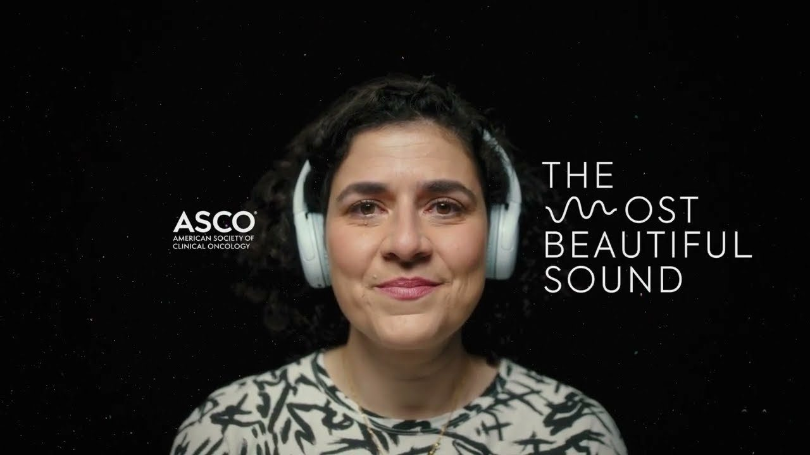
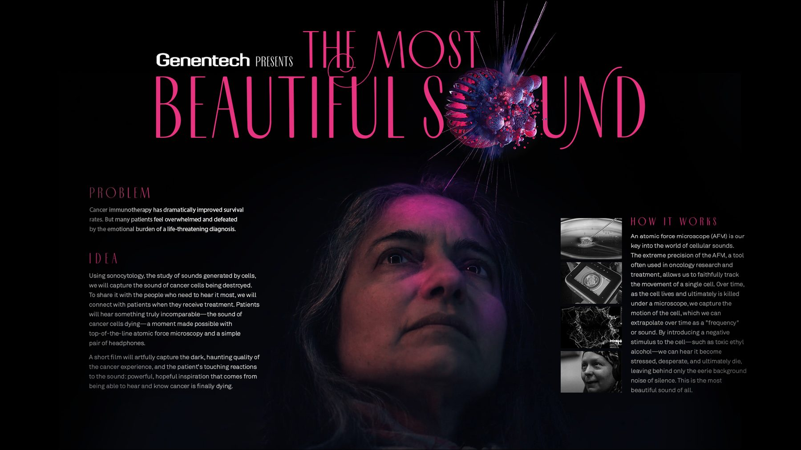

Oncology · Sound · Film · Web
The Most Beautiful Sound
For the first time ever, the sound of cancer cells dying — captured by science and given to every person living with cancer.

The idea
This project represents a scientific breakthrough that, for the first time ever, captures the sound of cancer cells dying. It’s a sound that has brought hope and resilience to millions of people fighting cancer. It’s a sound that the American Society of Clinical Oncology believes every person living with cancer deserves to hear.
The result
A Grand LIA, a Cannes Lions Gold and Bronze, a Clio Health Gold, NYF Health Grand + Gold and a D&AD Wood Pencil. Visit themostbeautifulsound.org to hear it.
Awards
- Cannes Lions 2023 — Gold
- Cannes Lions 2023 — Bronze
- London International Awards 2023 — Grand LIA (Pharma & Medical); Gold, Creative Use of Data; Gold, Innovation; Gold, Music & Sound Design
- Clio Health 2023 — Gold, Audio
- Clio Health 2023 — Silver, Innovation
- New York Festivals Health 2023 — Grand + Gold
- D&AD 2024 — Wood Pencil, Pharma / Innovation
Links
